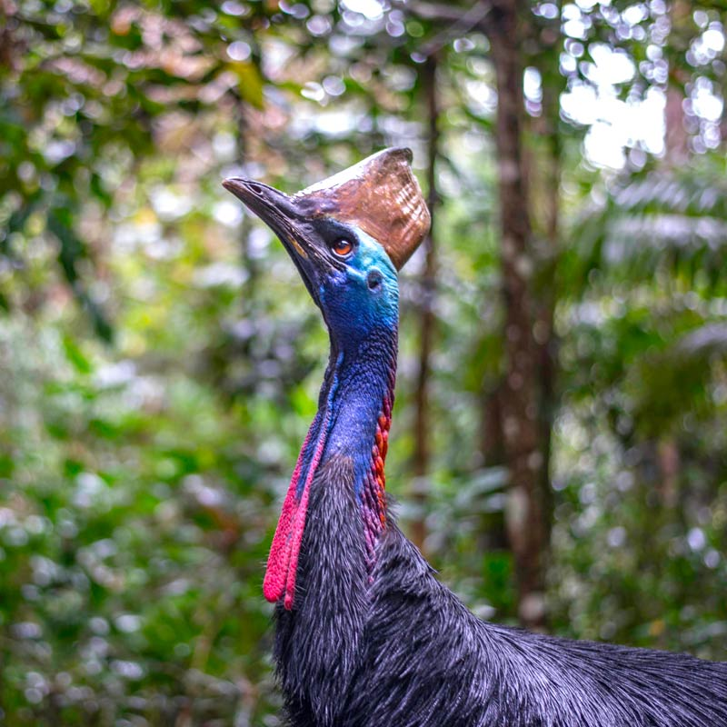

When observing the birds around us, it’s not just their flight or songs that are subjects of wonder, but also their prehistoric presence that links us to the age of dinosaurs. These modern-day avian species carry with them traits that are throwbacks to their dinosaurian heritage, from their physical appearance to their behaviors. Here, we highlight the top 10 birds that most closely resemble their ancient relatives, providing living connections to a world millions of years gone.
Cassowary
With its striking casque, a helmet-like structure on its head, and powerful legs, the cassowary is a prime example of avian-dinosaur resemblance. Its formidable claws and gaze give a glimpse into the past, recalling the theropod dinosaurs of the Cretaceous.

Roadrunner
The roadrunner, with its swift terrestrial speed and distinctive appearance, echoes the agility and ground-dwelling habits of certain small theropods. This bird's preference for running over flying, its streaked plumage, and its predatory tactics give it a remarkable resemblance to the smaller dinosaurs of the Cretaceous period.